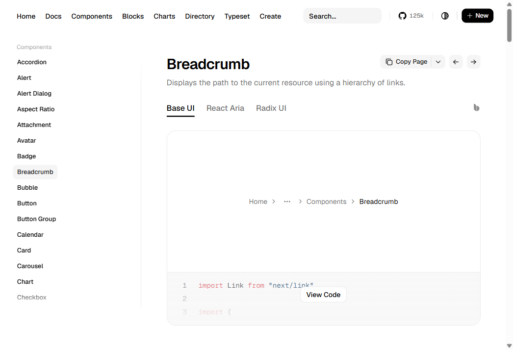
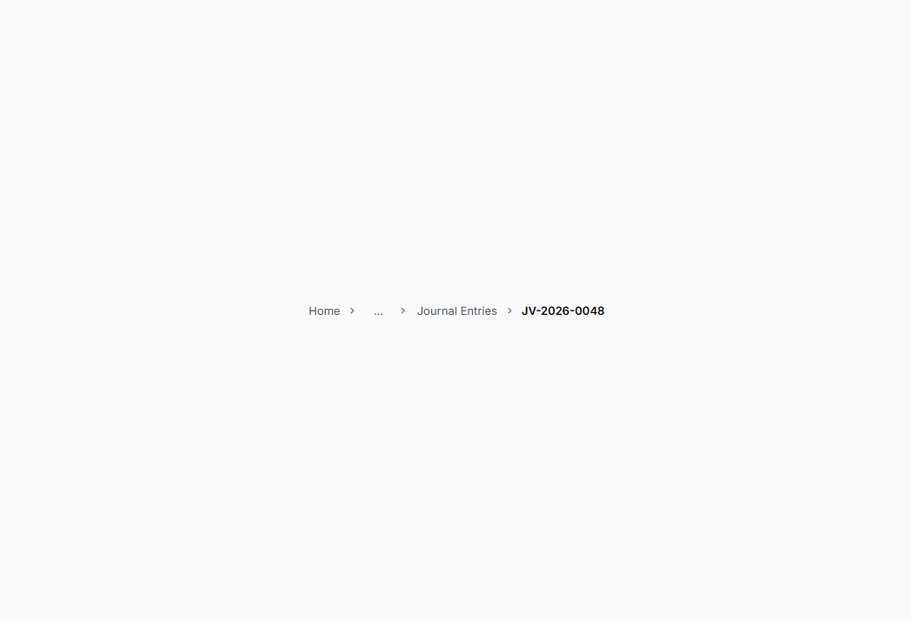
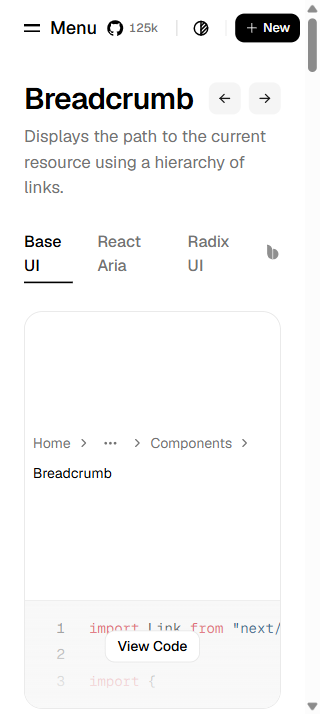
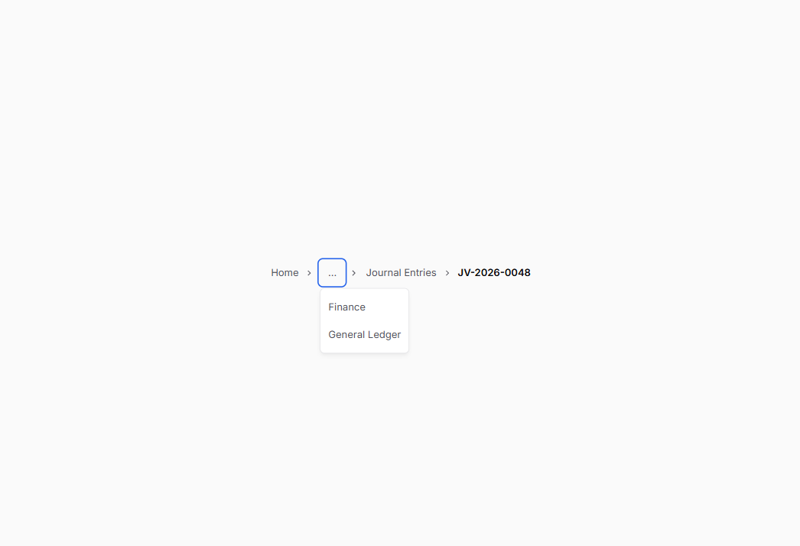

Captured 2026-09-28. Reference: official shadcn Breadcrumb. Local: Storybook Collapsed Long Path. Desktop captures use a 1046×714 CSS-pixel viewport; narrow captures use 320×714. The reference and local compositions show a root, collapsed ancestors, and recent/current destination. Strata retains its Inter/font tokens, chevron, 32px touch geometry, and native details disclosure.



